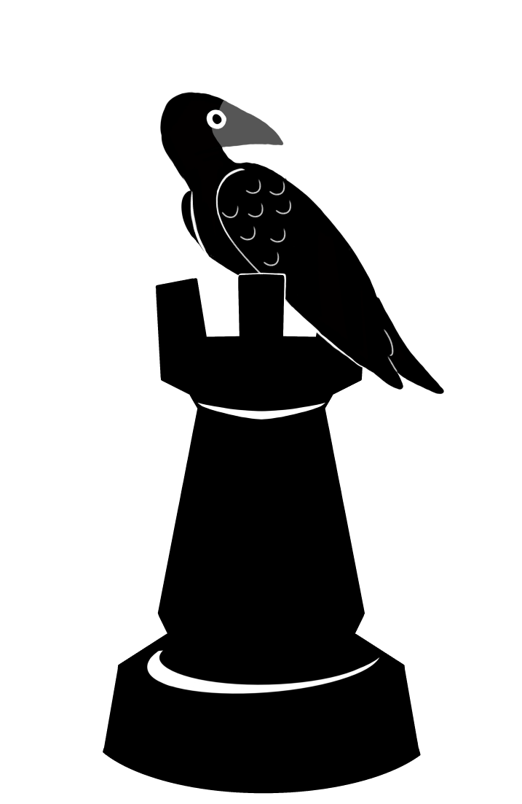
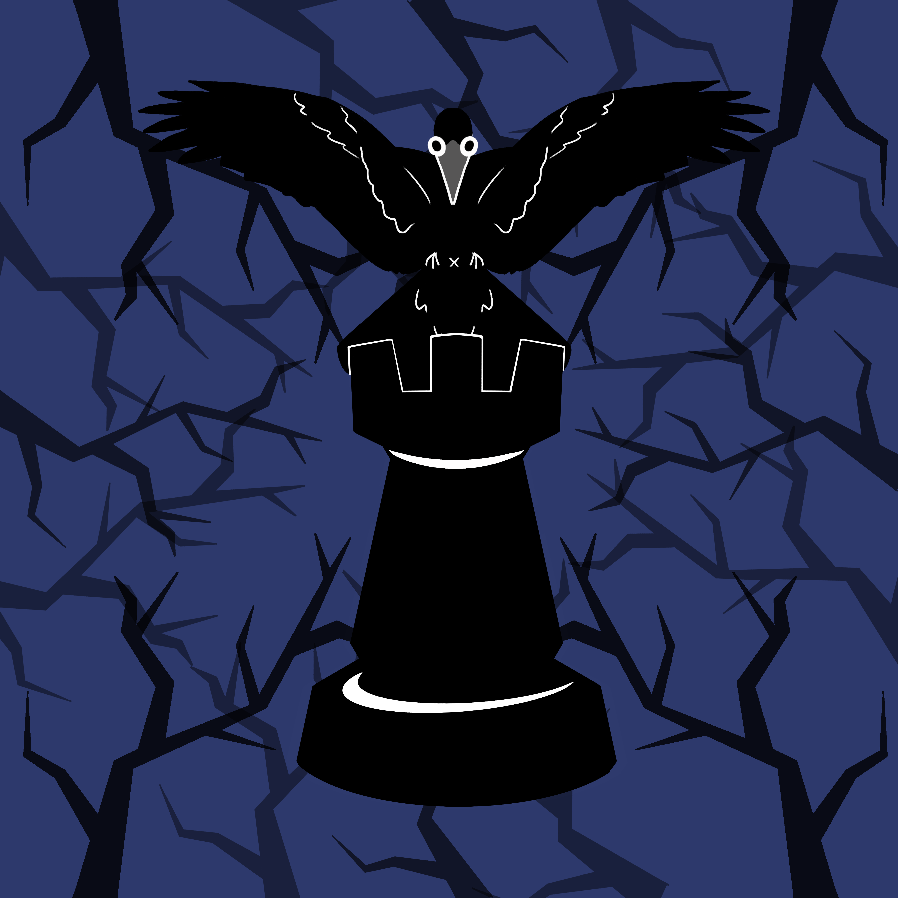
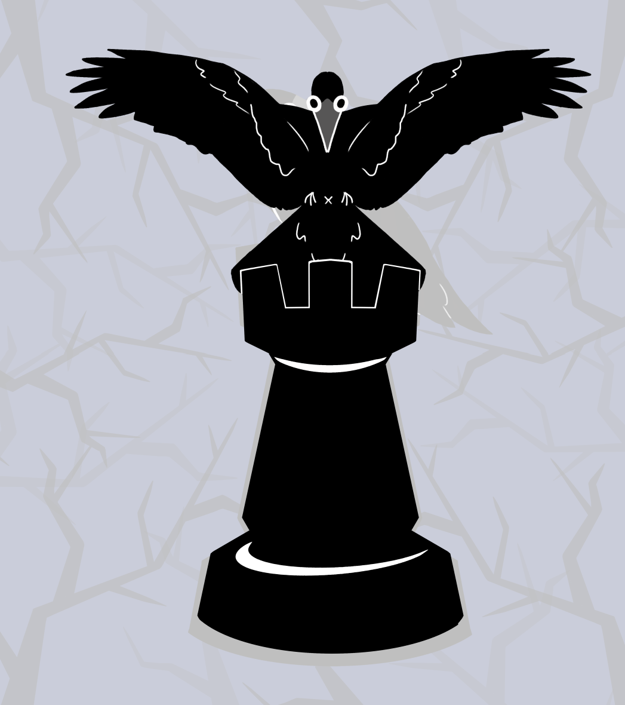
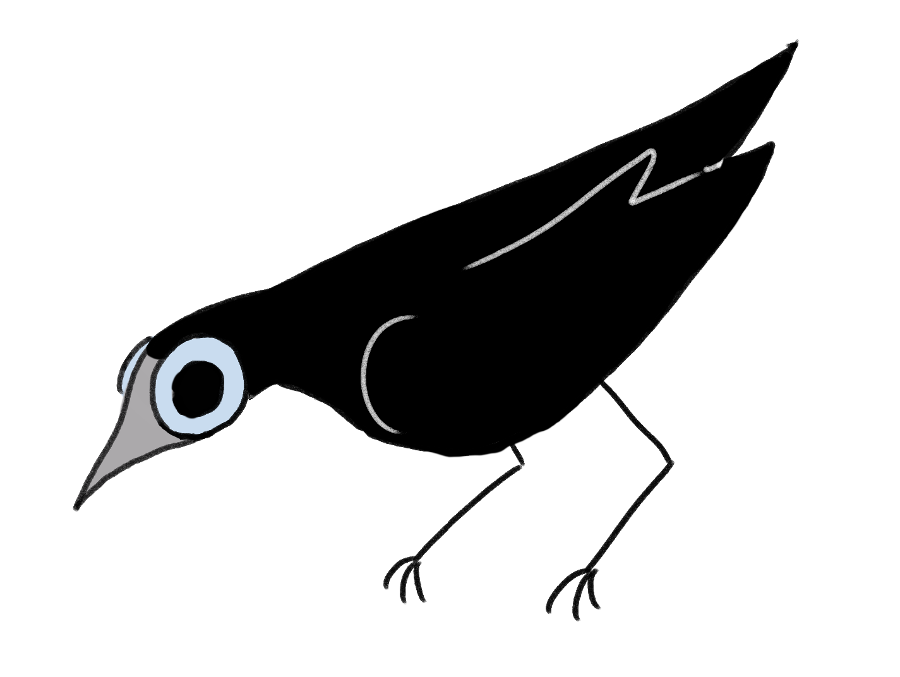

Reference for Jae · June 2026
The app's opening image — the bird perched and still, the world established before the game begins. Sits as a side-panel hero flanking the title and entry point. Sets the tone for everything that follows.
Used full-height on the left side of the title screen. The dark fractured background bleeds to the edge; a gradient softens the transition to the content panel.

The cleanest, most portable piece — no background context, just the subject. Used in two places: as the app icon / favicon in the navigation, and as a very faint watermark centered on the card table felt surface.
The watermark opacity is intentionally very low (~7–10%) — texture, not image. Should feel like a design decision rather than a visible illustration.

Full-screen win state. Wings spread wide — the most intense and celebratory image in the set. The score overlay sits centered over the image. The drama of the piece does the heavy lifting; the text just confirms what happened.
Used as full-bleed background. The existing dark blue and fractured stone give it a gothic grandeur that fits the win moment without feeling garish.

The same composition as rook1 — wings spread, same pose — but the color is gone. Muted and gray where rook1 was vivid and intense. The pair works because the defeat feels like the victory with the life sucked out of it.
Used as full-bleed background, same treatment as rook1. The tonal contrast between the two end screens is the design — no extra work needed to sell the difference.

One small bird per player, tucked into the corner diagonally adjacent to their seat — top-right looks toward N, bottom-right looks toward E, and so on. Only the active player's bird is visible; the other three are hidden or very dim.
~30–35px. The mockup shows N's turn active (top-right). Orientation: a single pose rotated/flipped in code to face each player. rook5's leaning stance should survive rotation — confirm it reads at small size.
Pops up briefly over the trick pile after your team takes a trick, then fades — gone in about a second. Puffed up and pleased with itself. A tiny moment of personality that rewards noticing.
~80px. Short-lived appearance. Good candidate for a subtle animation later — a self-satisfied ruffle or a proud little bob before it disappears.
Appears beside the bid display when an opponent makes a bold bid. The bird looks sideways at the number — quietly unimpressed. A comic beat that doesn't interrupt the game.
~60px. Lives right next to the bid number. Position relative to the number is part of the joke — it should look like the bird is literally staring at it.
Ambient presence in the lobby while waiting for other players to join. Head tilted, unhurried. The world before anything has happened yet — the bird is just here, watching.
~110px. Good candidate for a gentle idle animation later: a slow blink, a small head tilt, something that makes it feel alive without demanding attention.